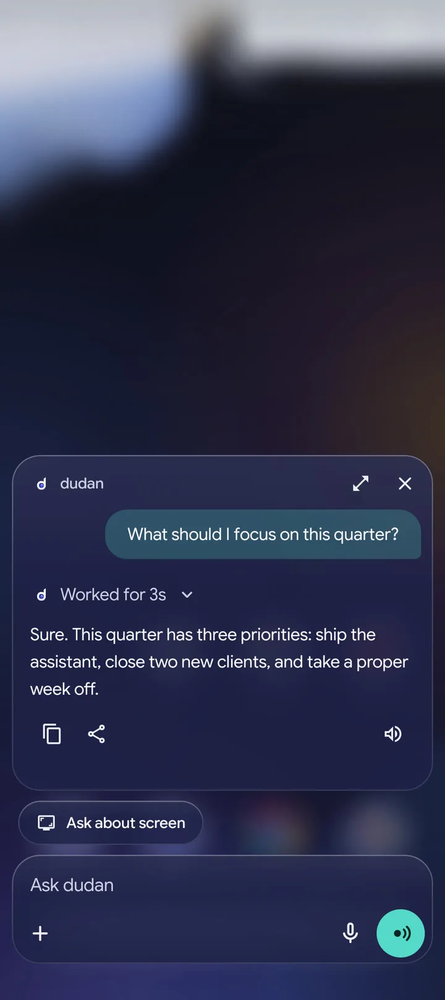

Your phone's assistant should be one that knows you. That's Dudan.
Your own Hermes Agent on your phone. Talk to it, use your tools and make it your own.
Your own Hermes Agent on your phone. Talk to it, use your tools and make it your own.
